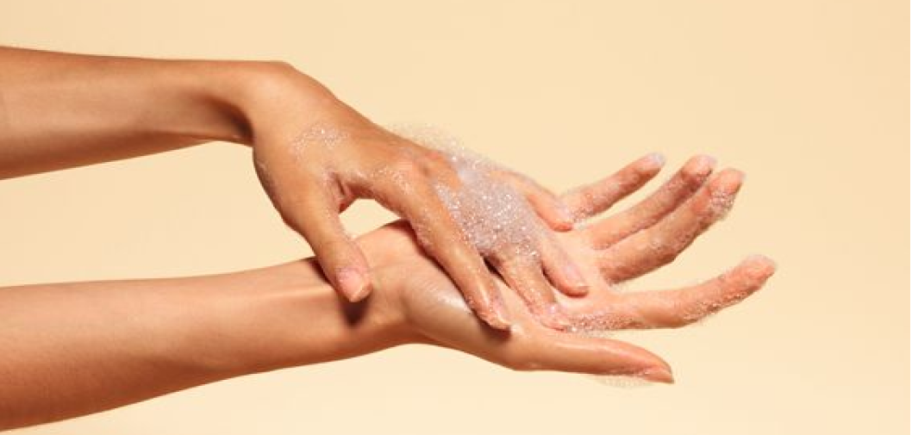
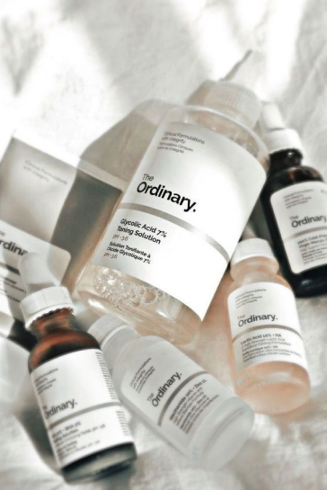
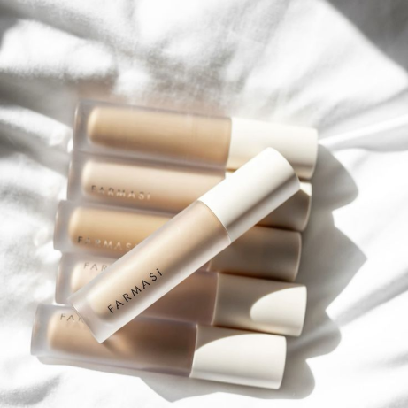
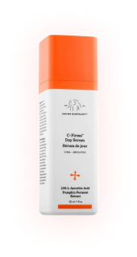
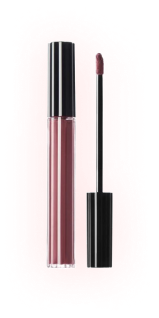
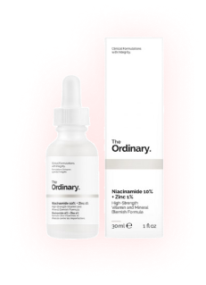
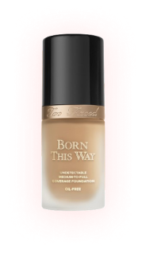

Într-o lume din ce în ce mai preocupată de etică și sustenabilitate, produsele cosmetice vegane și fără cruzime au devenit un subiect de interes major. Această tendință reflectă dorința consumatorilor de a folosi produse care nu doar îmbunătățesc aspectul și sănătatea pielii, dar și respectă valorile morale și de protecție a mediului. Dar ce înseamnă, de fapt, produsele cosmetice vegane și fără cruzime și de ce ar trebui să le alegem?

Produse Cosmetice Vegane Și Fără Cruzime. Ce recomandă cosmetologii și dermatologii?
Produsele cosmetice vegane sunt formulate fără a folosi ingrediente de origine animală. Aceasta înseamnă că nu conțin substanțe precum miere, ceară de albine, lanolină (extrasă din lână de oaie), colagen sau alte derivante animale. În locul acestora, se folosesc alternative de origine vegetală care oferă beneficii similare pentru piele.
Produsele cosmetice fără cruzime (cruelty-free) sunt cele care nu au fost testate pe animale în niciuna dintre etapele de dezvoltare și producție. Aceasta este o practică etică importantă, având în vedere suferința animalelor implicate în testările tradiționale de produse cosmetice.
Cum să alegi produse cosmetice vegane și fără cruzime?
Verifică etichetele : Caută certificări recunoscute precum Leaping Bunny, PETA's Beauty Without Bunnies sau Vegan Society. Acestea garantează că produsul este atât vegan, cât și cruelty-free.
Citește ingredientele: Familiarizează-te cu ingredientele comune de origine animală pentru a le putea evita. De asemenea, fii atent la sursele ingredientelor vegetale pentru a te asigura că provin din practici sustenabile.
Alege branduri etice: Multe branduri au început să adopte practici etice și transparente. Fă o cercetare prealabilă și susține companiile care demonstrează un angajament față de etica și sustenabilitatea în afaceri.


Beneficiile produselor cosmetice vegane și fără cruzime:
Etică și morală: Alegerea produselor vegane și fără cruzime reflectă un angajament personal față de bunăstarea animalelor și o opoziție fermă față de practicile de testare pe animale.
Ingrediente naturale și sănătoase: Produsele vegane sunt adesea formulate cu ingrediente naturale, evitând chimicalele agresive și substanțele sintetice care pot irita pielea. Acestea includ extracte de plante, uleiuri esențiale și alte ingrediente botanice.
Sustenabilitate: Producția de cosmetice vegane și fără cruzime are un impact mai redus asupra mediului, deoarece evită utilizarea resurselor animale și promovează practici mai ecologice.
Calitate și eficacitate: Cosmeticele vegane și fără cruzime sunt dezvoltate pentru a oferi rezultate remarcabile fără a compromite calitatea. Mulți utilizatori descoperă că aceste produse sunt la fel de eficiente, dacă nu chiar mai bune, decât alternativele convenționale.
Produsele cosmetice vegane și fără cruzime reprezintă mai mult decât o simplă tendință; ele sunt parte dintr-o mișcare globală către un stil de viață mai etic și mai responsabil. Alegerea acestor produse nu doar că îți oferă beneficii pentru piele, dar contribuie și la protejarea animalelor și a mediului. Într-o lume în care alegerile noastre de consum au un impact semnificativ, adoptarea cosmeticelor vegane și fără cruzime este un pas important spre un viitor mai bun și mai luminos.
Cele Mai Populare Produse Potrivite Articolului



